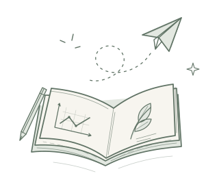

LEARNING WITH CURIOSITY. GROWING WITH CONFIDENCE.
Big questions.
Boundless possibilities.
Volunteer-led math and science learning, shaped around each grade. Explore our curriculum, find individual support, or help a student take their next step.
In the classroom. In a conversation. One question at a time.


- Math
- Biology
- Chemistry
- Physics
- Earth science
FIND YOUR NEXT STEP
Different starting points.
The same room to grow.
A classroom activity, a tricky problem, or a new way to get involved. Start where you are.
Explore the curriculum.
See how math and the sciences take shape across K–12, with sample lessons for each grade band.
Choose a grade 02 / ONE QUESTION AT A TIMEFind individual support.
Bring the topic that has you stuck. Make room to slow down, ask questions, and work through it together.
Request 1-on-1 tutoring 03 / BE PART OF BTSStay connected.
Find our community, learn how to get involved, and keep the conversation going beyond the classroom.
Meet the communityABOUT BREAKING THE SKY
A classroom today.
A world of possibility tomorrow.
We’re a nonprofit with a simple belief: a new perspective can open a whole new world. BTS connects volunteers with schools to bring curriculum-based learning to students at different grade levels.
Meet our people
A WAY TO APPROACH
SOMETHING NEW
- 01
Start with a question.
Notice a pattern, revisit a problem, or wonder why something happens.
- 02
Try an idea.
Draw it, test it, talk it through. Give the thinking room to unfold.
- 03
Make the connection.
Explain what changed and how the idea connects to the world around you.
MAKE TIME FOR LEARNING
Your curiosity has a place here.
Help bring math and science into the classroom. Tell us about your interests and the time you can share.